F I Ş A Nr. 6
- Deschideti aplicatia Microsof Excel (Start – >Programs-> Microsoft Office –> Microsoft Excel)
- Redenumiti prima foaie de cacul cu numele ‘Componenta etnica’ si apoi introduceti datele din figura 1.(Etnie, Procente)
- Selectati zona de date de la A3 pana la B10 si alegeti din meniul Inserare optiunea 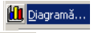
-
Selectati tipul de diagrama si subtipul de diagrama cu efect 3D 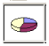si apasati butonul
urmator 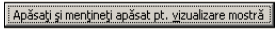 pentru a vedea cum va arata genul de diagrama ,
apoi treceti la urmatorul pas(butonul urmatorul) selectand seria pe coloane si selectati iar butonul urmatorul.
-
La pasul 3 , selectati eticheta Titluri si introduceti titlul : ‘Componenta etnica a populatiei Romaniei’, apoi
eticheta 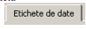si selectati optinea 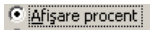 dupa care butonul urmatorul .
-
În final , la pasul 4 puteti selecta plasarea diagramei in foaia de lucru ‘Componenta etnica’ sau alta
foaie.+Terminare
Diagrama va arata ca in figura 1. Schimbati culorile fiecarei etnii prin dublu click pe culoarea din cercul
desenat apoi selectati culoarea din caseta deschisa 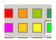 dupa care apasati butonul ok.
-
Schimbati subtipul de diagrama (Click butonul drept pe diagrama) alegand din meniul deschis optiunea
subtipul de diagrama urmatorul 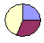 apoi butonul ok..
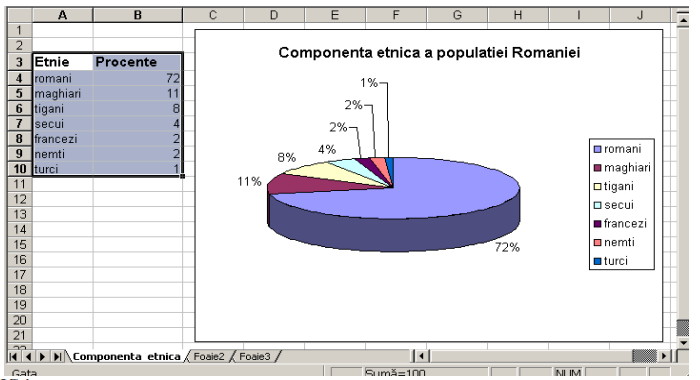FiG 1.
-
Selectati urmatoarea foaie de lucru si redenumiti-o cu numele ‘ Temperaturile iarna’ apoi introduce-ti
datele din figura 2, si construiti diagrama folosind tipul de diagrama 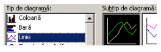
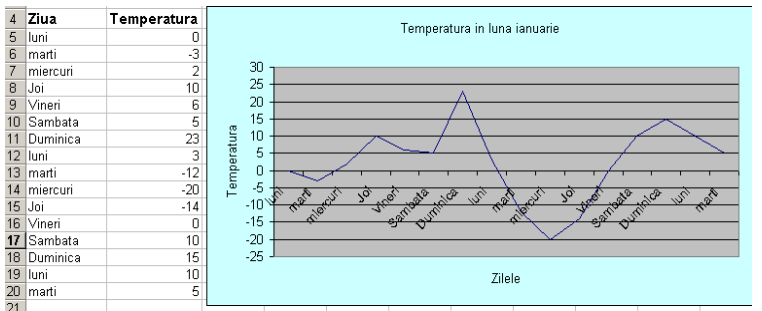
-
Redenumiti ultima foaie de lucru cu numele ‘ Gradina zoo’ şi creati diagrama din figura de mai jos
dupa introducerea datelor , selectând tipul de diagrama 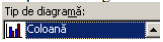
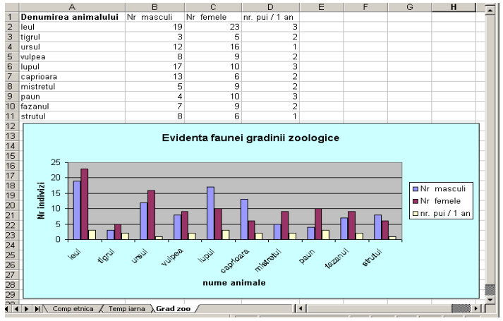